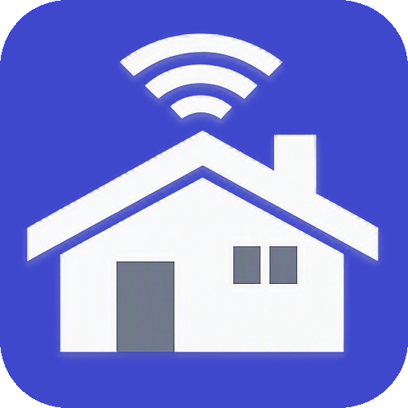

StuAuth
Authentificateur TOTP/HOTP local. Pas de cloud, pas de suivi.

RemoteHub
Gestionnaire d'applications à distance pour Windows et Linux.

NexusUtils
Ouvre des pages web avec remplissage automatique des formulaires.

EchoClip
Gestionnaire de presse-papiers léger et réactif.

Shuttle
Espace de travail SSH avec terminal, SFTP et monitoring.

Tux Whisperer
Un compagnon système optimisé pour ton Mac.

Keyes IOT
Version dérivée pour Android 7.0.0 et plus.

Echo
Compagnon d'écran personnalisable en WPF C#.

QtLingo
Traducteur automatique pour fichiers Qt .ts.
Générateur QR
Générateur de QRCode puissant en CLI.
PatchRDP
Accès au lecteur de carte à puce pour RDP.

System Monitor
Gestionnaire de tâches moderne pour Windows et Linux.